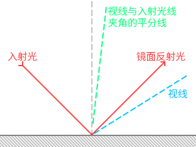

Ch8-3 延迟渲染（未完成）
本节的main.cpp对应示例代码中的：Ch8-3.hpp
虽然延迟渲染属于图形编程常识性内容，但这里姑且还是简单介绍下概念。
正向渲染
在绘制场景中每个物件的时候完成其光照计算，这种传统的渲染方式即是正向渲染（forward rendering）。
延迟渲染
渲染过程中绘制的许多片段最终会因深度测试而被遮挡掉，那么显然，打从一开始就没必要对这些片段进行光照计算。
延迟渲染（deferred rendering）即是将本该在绘制每个物件时进行的光照计算延后，只对最终保留下来的片段进行光照计算，以此来大幅节省运算开销的渲染手段。
延迟渲染的具体做法分为两步：
1.绘制场景中的物件但不计算光照，而是将光照计算所需的信息写入图像附件，这些图像附件统称为几何缓冲（G-buffer）
2.对交换链图像中的每个像素，读取G-buffer中相应位置的数据，进行光照计算，这一步叫合成（composition）
如此一来，进行光照计算的片段着色器调用次数，便等于交换链图像的像素数，在确定的分辨率下是个恒定值，不会因场景中物件的增多而增长。
前向透明度
渲染半透明物体时，需要透出底下的颜色。
因为延迟渲染中的G-buffer只有深度测试后最终留下来的片段，从中无法获取所谓“底下”的信息，因此无法延迟渲染半透明物体。
前向透明度（forward transparency）指在延迟渲染结束时保留深度值，然后正向渲染半透明物体的做法。
本文以演示Vulkan API为主要目的，实现一套最简单的延迟渲染的流程，不考虑前向透明度。
冯氏光照
考虑到讲解BRDF光照模型估计得花上四节的篇幅，这一节就用较为老旧的冯氏光照（Phong lighting）模型吧。
冯氏光照模型使用较为简单的材质参数，颜色和高光度，计算物体表面的漫反射和高光。
TODO 施工中。
创建渲染通道和帧缓冲
对于通过延迟渲染实现冯氏光照，渲染通道的结构一般是这样的：
（下图中子通道#0的G-buffer例图为带有透明度的原图，子通道#1的例图将RGBA中A的数值以灰度图的形式可视化）

-
Vulkan标准规定实现必须支持VK_FORMAT_R16G16B16A16_SFLOAT格式的颜色附件，但是否支持VK_FORMAT_R16G16B16_SFLOAT格式的颜色附件则取决于硬件。因此虽然位置坐标和法向量都只有三个分量，出于省事和可移植性考虑，这里使用四分量的格式。
-
如果你觉得16位浮点数的精度不够，Vulkan标准也规定了实现必须支持VK_FORMAT_R32G32B32A32_SFLOAT格式的颜色附件（不保证能混色，不过G-buffer用不着混色）。但16位浮点附件和32位浮点附件最终算出的颜色只有约（8位色模式下）4个色阶的差异。
世界空间的位置坐标，可以通过深度附件中的深度值、片段的NDC坐标、投影矩阵、观察矩阵算得，因此上图中还可以减少一个图像附件以节省设备内存。
深度值是用来计算相机坐标系下的z坐标的，这一步可以被省掉：用来存法向量的图像附件只用了三个分量，可以将相机空间中的z坐标存入其第四个分量。
于是结构变成这样：
在EasyVulkan.hpp，easyVulkan命名空间中，定义相关的图像附件，及用来创建这些附件、渲染通道、帧缓冲的函数CreateRpwf_DeferredToScreen(...)。
为简化代码，这次就不为每张交换链图像分别创建一套对应的图像附件了：
colorAttachment ca_deferredToScreen_normalZ; //法线和相机坐标系下的z值 colorAttachment ca_deferredToScreen_albedoSpecular; //颜色和高光度 depthStencilAttachment dsa_deferredToScreen; //深度 const auto& CreateRpwf_DeferredToScreen(VkFormat depthStencilFormat = VK_FORMAT_D24_UNORM_S8_UINT) { static renderPassWithFramebuffers rpwf; ExecuteOnce(rpwf); //防止重复执行 static VkFormat _depthStencilFormat = depthStencilFormat; //因为一会儿需要用lambda定义重建交换链时的回调函数，把格式存到静态变量 /*待后续填充*/ return rpwf; }
四个图像附件的描述如下：
VkAttachmentDescription attachmentDescriptions[4] = { { //交换链图像 .format = graphicsBase::Base().SwapchainCreateInfo().imageFormat, .samples = VK_SAMPLE_COUNT_1_BIT, .loadOp = VK_ATTACHMENT_LOAD_OP_CLEAR, .storeOp = VK_ATTACHMENT_STORE_OP_STORE, .stencilLoadOp = VK_ATTACHMENT_LOAD_OP_DONT_CARE, .stencilStoreOp = VK_ATTACHMENT_STORE_OP_DONT_CARE, .finalLayout = VK_IMAGE_LAYOUT_PRESENT_SRC_KHR }, { //法线和相机坐标系下的z值 .format = VK_FORMAT_R16G16B16A16_SFLOAT, .samples = VK_SAMPLE_COUNT_1_BIT, .loadOp = VK_ATTACHMENT_LOAD_OP_CLEAR, .storeOp = VK_ATTACHMENT_STORE_OP_DONT_CARE, .stencilLoadOp = VK_ATTACHMENT_LOAD_OP_DONT_CARE, .stencilStoreOp = VK_ATTACHMENT_STORE_OP_DONT_CARE, .finalLayout = VK_IMAGE_LAYOUT_SHADER_READ_ONLY_OPTIMAL }, { //颜色和高光度 .format = VK_FORMAT_R8G8B8A8_UNORM, //与上一个只有格式不同 .samples = VK_SAMPLE_COUNT_1_BIT, .loadOp = VK_ATTACHMENT_LOAD_OP_CLEAR, .storeOp = VK_ATTACHMENT_STORE_OP_DONT_CARE, .stencilLoadOp = VK_ATTACHMENT_LOAD_OP_DONT_CARE, .stencilStoreOp = VK_ATTACHMENT_STORE_OP_DONT_CARE, .finalLayout = VK_IMAGE_LAYOUT_SHADER_READ_ONLY_OPTIMAL }, { //深度和模板 .format = _depthStencilFormat, .samples = VK_SAMPLE_COUNT_1_BIT, .loadOp = VK_ATTACHMENT_LOAD_OP_CLEAR, .storeOp = VK_ATTACHMENT_STORE_OP_DONT_CARE, .stencilLoadOp = _depthStencilFormat >= VK_FORMAT_S8_UINT ? VK_ATTACHMENT_LOAD_OP_CLEAR : VK_ATTACHMENT_LOAD_OP_DONT_CARE, .stencilStoreOp = VK_ATTACHMENT_STORE_OP_DONT_CARE, .finalLayout = VK_IMAGE_LAYOUT_DEPTH_STENCIL_ATTACHMENT_OPTIMAL } };
子通道的描述：
VkAttachmentReference attachmentReferences_subpass0[3] = { { 1, VK_IMAGE_LAYOUT_COLOR_ATTACHMENT_OPTIMAL }, //对应normalZ { 2, VK_IMAGE_LAYOUT_COLOR_ATTACHMENT_OPTIMAL }, //对应albedoSpecular { 3, VK_IMAGE_LAYOUT_DEPTH_STENCIL_ATTACHMENT_OPTIMAL } //对应深度和模板 }; VkAttachmentReference attachmentReferences_subpass1[3] = { { 1, VK_IMAGE_LAYOUT_SHADER_READ_ONLY_OPTIMAL }, //对应normalZ { 2, VK_IMAGE_LAYOUT_SHADER_READ_ONLY_OPTIMAL }, //对应albedoSpecular { 0, VK_IMAGE_LAYOUT_COLOR_ATTACHMENT_OPTIMAL } //对应交换链图像 }; VkSubpassDescription subpassDescriptions[2] = { { //第一个子通道，生成G-buffer .pipelineBindPoint = VK_PIPELINE_BIND_POINT_GRAPHICS, .colorAttachmentCount = 2, .pColorAttachments = attachmentReferences_subpass0, .pDepthStencilAttachment = attachmentReferences_subpass0 + 2 }, { //第二个子通道，进行composition .pipelineBindPoint = VK_PIPELINE_BIND_POINT_GRAPHICS, .inputAttachmentCount = 2, .pInputAttachments = attachmentReferences_subpass1, //将两张G-buffer用作输入附件 .colorAttachmentCount = 1, .pColorAttachments = attachmentReferences_subpass1 + 2 } };
渲染通道开始时的子通道依赖：
VkSubpassDependency subpassDependencies[2] = { { .srcSubpass = VK_SUBPASS_EXTERNAL, .dstSubpass = 0, .srcStageMask = VK_PIPELINE_STAGE_FRAGMENT_SHADER_BIT, .dstStageMask = VK_PIPELINE_STAGE_EARLY_FRAGMENT_TESTS_BIT, .srcAccessMask = 0, .dstAccessMask = VK_ACCESS_DEPTH_STENCIL_ATTACHMENT_WRITE_BIT, .dependencyFlags = VK_DEPENDENCY_BY_REGION_BIT }, { /*渲染通道结束时的依赖，待填充*/ } };
-
srcStageMask是VK_PIPELINE_STAGE_FRAGMENT_SHADER_BIT（惯例说明：因有栅栏同步，填0也无妨），指代前一帧中在片段着色器中读写G-buffer，除此之外与先前Ch8-2 深度测试和深度可视化中渲染通道开始时的依赖相同。
填写子通道#0和子通道#1之间的依赖，创建渲染通道：
VkSubpassDependency subpassDependencies[2] = { { .srcSubpass = VK_SUBPASS_EXTERNAL, .dstSubpass = 0, .srcStageMask = VK_PIPELINE_STAGE_FRAGMENT_SHADER_BIT, .dstStageMask = VK_PIPELINE_STAGE_EARLY_FRAGMENT_TESTS_BIT, .srcAccessMask = 0, .dstAccessMask = VK_ACCESS_DEPTH_STENCIL_ATTACHMENT_WRITE_BIT, .dependencyFlags = VK_DEPENDENCY_BY_REGION_BIT }, { .srcSubpass = 0, .dstSubpass = 1, .srcStageMask = VK_PIPELINE_STAGE_COLOR_ATTACHMENT_OUTPUT_BIT, .dstStageMask = VK_PIPELINE_STAGE_FRAGMENT_SHADER_BIT, .srcAccessMask = VK_ACCESS_COLOR_ATTACHMENT_WRITE_BIT, .dstAccessMask = VK_ACCESS_INPUT_ATTACHMENT_READ_BIT, .dependencyFlags = VK_DEPENDENCY_BY_REGION_BIT } }; VkRenderPassCreateInfo renderPassCreateInfo = { .attachmentCount = 4, .pAttachments = attachmentDescriptions, .subpassCount = 2, .pSubpasses = subpassDescriptions, .dependencyCount = 2, .pDependencies = subpassDependencies }; rpwf.renderPass.Create(renderPassCreateInfo);
-
这里即是要求子通道#0中将颜色输出到G-buffer后，在子通道#1中片段着色器读取这些输入附件（VK_ACCESS_INPUT_ATTACHMENT_READ_BIT）前完成包括交换链图像在内的内存布局转换。
创建相应的图像附件和帧缓冲。
因为用作输入附件的G-buffer在渲染通道结束后就用不着了，图像用途中指定VK_IMAGE_USAGE_TRANSIENT_ATTACHMENT_BIT：
colorAttachment ca_deferredToScreen_normalZ; //法线和相机坐标系下的z值 colorAttachment ca_deferredToScreen_albedoSpecular; //颜色和高光度 depthStencilAttachment dsa_deferredToScreen; //深度 const auto& CreateRpwf_DeferredToScreen(VkFormat depthStencilFormat = VK_FORMAT_D24_UNORM_S8_UINT) { /*...前面略*/ auto CreateFramebuffers = [] { rpwf.framebuffers.resize(graphicsBase::Base().SwapchainImageCount()); ca_deferredToScreen_normalZ.Create(VK_FORMAT_R16G16B16A16_SFLOAT, windowSize, 1, VK_SAMPLE_COUNT_1_BIT, VK_IMAGE_USAGE_INPUT_ATTACHMENT_BIT | VK_IMAGE_USAGE_TRANSIENT_ATTACHMENT_BIT); ca_deferredToScreen_albedoSpecular.Create(VK_FORMAT_R8G8B8A8_UNORM, windowSize, 1, VK_SAMPLE_COUNT_1_BIT, VK_IMAGE_USAGE_INPUT_ATTACHMENT_BIT | VK_IMAGE_USAGE_TRANSIENT_ATTACHMENT_BIT); dsa_deferredToScreen.Create(_depthStencilFormat, windowSize, 1, VK_SAMPLE_COUNT_1_BIT, VK_IMAGE_USAGE_TRANSIENT_ATTACHMENT_BIT); VkImageView attachments[4] = { VK_NULL_HANDLE, ca_deferredToScreen_normalZ.ImageView(), ca_deferredToScreen_albedoSpecular.ImageView(), dsa_deferredToScreen.ImageView() }; VkFramebufferCreateInfo framebufferCreateInfo = { .renderPass = rpwf.renderPass, .attachmentCount = 4, .pAttachments = attachments, .width = windowSize.width, .height = windowSize.height, .layers = 1 }; for (size_t i = 0; i < graphicsBase::Base().SwapchainImageCount(); i++) attachments[0] = graphicsBase::Base().SwapchainImageView(i), rpwf.framebuffers[i].Create(framebufferCreateInfo); }; auto DestroyFramebuffers = [] { ca_deferredToScreen_normalZ.~colorAttachment(); ca_deferredToScreen_albedoSpecular.~colorAttachment(); dsa_deferredToScreen.~depthStencilAttachment(); rpwf.framebuffers.clear(); }; graphicsBase::Base().AddCallback_CreateSwapchain(CreateFramebuffers); graphicsBase::Base().AddCallback_DestroySwapchain(DestroyFramebuffers); CreateFramebuffers(); return rpwf; }
顶点和索引数据
在main.cpp中定义顶点数据的结构体：
struct vertex { glm::vec3 position; glm::vec3 normal; glm::vec4 albedoSpecular; };
基于前一节的顶点数据做修改。
因为是立方体，很容易就能写出法线。颜色和高光度随意，我这里用白色以反射任何颜色的光，高光度用了1，你可以指定超过1：
vertex vertices[] = { //x+ { { 1, 1, -1 }, { 1, 0, 0 }, { 1, 1, 1, 1 } }, { { 1, -1, -1 }, { 1, 0, 0 }, { 1, 1, 1, 1 } }, { { 1, 1, 1 }, { 1, 0, 0 }, { 1, 1, 1, 1 } }, { { 1, -1, 1 }, { 1, 0, 0 }, { 1, 1, 1, 1 } }, //x- { { -1, 1, 1 }, { -1, 0, 0 }, { 1, 1, 1, 1 } }, { { -1, -1, 1 }, { -1, 0, 0 }, { 1, 1, 1, 1 } }, { { -1, 1, -1 }, { -1, 0, 0 }, { 1, 1, 1, 1 } }, { { -1, -1, -1 }, { -1, 0, 0 }, { 1, 1, 1, 1 } }, //y+ { { 1, 1, -1 }, { 0, 1, 0 }, { 1, 1, 1, 1 } }, { { 1, 1, 1 }, { 0, 1, 0 }, { 1, 1, 1, 1 } }, { { -1, 1, -1 }, { 0, 1, 0 }, { 1, 1, 1, 1 } }, { { -1, 1, 1 }, { 0, 1, 0 }, { 1, 1, 1, 1 } }, //y- { { 1, -1, -1 }, { 0, -1, 0 }, { 1, 1, 1, 1 } }, { { -1, -1, -1 }, { 0, -1, 0 }, { 1, 1, 1, 1 } }, { { 1, -1, 1 }, { 0, -1, 0 }, { 1, 1, 1, 1 } }, { { -1, -1, 1 }, { 0, -1, 0 }, { 1, 1, 1, 1 } }, //z+ { { 1, 1, 1 }, { 0, 0, 1 }, { 1, 1, 1, 1 } }, { { 1, -1, 1 }, { 0, 0, 1 }, { 1, 1, 1, 1 } }, { { -1, 1, 1 }, { 0, 0, 1 }, { 1, 1, 1, 1 } }, { { -1, -1, 1 }, { 0, 0, 1 }, { 1, 1, 1, 1 } }, //z- { { -1, 1, -1 }, { 0, 0, -1 }, { 1, 1, 1, 1 } }, { { -1, -1, -1 }, { 0, 0, -1 }, { 1, 1, 1, 1 } }, { { 1, 1, -1 }, { 0, 0, -1 }, { 1, 1, 1, 1 } }, { { 1, -1, -1 }, { 0, 0, -1 }, { 1, 1, 1, 1 } } }; vertexBuffer vertexBuffer_perVertex(sizeof vertices); vertexBuffer_perVertex.TransferData(vertices);
逐实例输入的位移、索引数据就跟Ch8-2中一样吧。
Uniform数据
这次来尝试使用观察矩阵。
因为push constant的128字节不够，我打算把投影矩阵、观察矩阵、点光源信息都放进单个uniform缓冲区：
struct { glm::mat4 proj = FlipVertical(glm::infinitePerspectiveLH_ZO(glm::radians(60.f), float(windowSize.width) / windowSize.height, 0.1f)); glm::mat4 view = /*待填充*/; int32_t lightCount; struct { alignas(16) glm::vec3 position; //光源位置 alignas(16) glm::vec3 color; //光的颜色 float strength; //光的强度 } lights[8]; } descriptorConstants;
GLM中提供了用于生成观察矩阵的函数glm::lookAt(...)：
mat4 lookAt( vec3 eye, //观察者所在位置 vec3 center, //观察者所视方向上的点 vec3 up //头顶的方向（请不要纠结观察者是不是人有没有头之类的问题） );
-
up不必与观察者所视方向垂直，但不得与观察者所视方向完全同向/反向。
center - eye即是观察者所视方向，称为前向量。
up与前向量叉乘可得到指向观察者右方的向量，称为右向量。
前向量与右向量叉乘得到的结果叫上向量。
右向量、上向量、前向量，世界坐标系中的这三个向量与相机空间中三条坐标轴的正方向一一对应。
下面代码中，我显式地调用了glm::lookAt(...)的左手系版本glm::lookAtLH(...)。
生成的观察矩阵从世界坐标原点看向+z方向，前向量为{ 0, 0, 1 }，则up为{ -1, 0, 0 }相当于将头逆时针倾斜90°：
glm::mat4 view = glm::lookAtLH(glm::vec3(0, 0, 0), glm::vec3(0, 0, 1), glm::vec3(-1, 0, 0));
来指定点光源，虽然我前面让lights有8个元素，这里就省事点只用分别为红绿蓝的三个光源，届时哪个光打在哪儿也能分得很清楚。
最后把数据扔进uniform缓冲区。
descriptorConstants.lightCount = 3;
descriptorConstants.lights[0] = { { 0.f, 4.f, 0.f }, { 1.f, 0.f, 0.f }, 100.f }; //红光
descriptorConstants.lights[1] = { { 0.f, 0.f, 16.f }, { 0.f, 1.f, 0.f }, 100.f }; //绿光
descriptorConstants.lights[2] = { { 0.f, -4.f, 0.f }, { 0.f, 0.f, 1.f }, 100.f }; //蓝光
uniformBuffer uniformBuffer(sizeof descriptorConstants);
uniformBuffer.TransferData(descriptorConstants);
在这里预先展示下届时的效果：
-
因“将头逆时针倾斜90°”，与前一节中的图像相比，视野中的物体顺时针转了90°。
书写着色器并创建管线
GBuffer.vert.shader
#version 460 #pragma shader_stage(vertex) layout(location = 0) in vec3 i_Position; //逐顶点 layout(location = 1) in vec3 i_Normal; //逐顶点 layout(location = 2) in vec4 i_AlbedoSpecular; //逐顶点 layout(location = 3) in vec3 i_InstancePosition; //逐实例 layout(location = 0) out vec4 o_NormalZ; layout(location = 1) out vec4 o_AlbedoSpecular; layout(binding = 0) uniform descriptorConstants_pv { mat4 proj; mat4 view; //观察矩阵 }; void main() { vec3 position = i_Position + i_InstancePosition; gl_Position = proj * view * vec4(position, 1); o_NormalZ = vec4(i_Normal, gl_Position.w); //此处gl_Position.w等于相机空间中的z坐标 o_AlbedoSpecular = i_AlbedoSpecular; }
-
没必要为了获得相机空间中的z坐标而把
view * vec4(position, 1)的结果保存到变量，透视投影矩阵与相机空间坐标相乘后得到的gl_Position.w等于相机空间中的z坐标，解释在前一节。
GBuffer.frag.shader
#version 460 #pragma shader_stage(fragment) layout(location = 0) in vec4 i_NormalZ; layout(location = 1) in vec4 i_AlbedoSpecular; layout(location = 0) out vec4 o_NormalZ; layout(location = 1) out vec4 o_AlbedoSpecular; void main() { o_NormalZ = i_NormalZ; o_AlbedoSpecular = i_AlbedoSpecular; }
Composition.vert.shader
绘制整个屏幕的范围。
输出NDC坐标的x和y，用于在片段着色器中求取片段对应的世界坐标系中的位置：
#version 460 #pragma shader_stage(vertex) vec2 positions[4] = { { 0, 0 }, { 0, 1 }, { 1, 0 }, { 1, 1 } }; layout(location = 0) out vec2 o_Position; void main() { o_Position = positions[gl_VertexIndex]; gl_Position = vec4(o_Position, 0, 1); }
Composition.frag.shader
定义所有输入输出和可特化常量：
#version 460 #pragma shader_stage(fragment) struct light { vec3 position; vec3 color; float strength; }; layout(constant_id = 0) const uint maxLightCount = 32; layout(constant_id = 1) const uint shininess = 32; layout(location = 0) in vec2 i_Position; layout(location = 0) out vec4 o_Color; layout(binding = 0) uniform descriptorConstants { mat4 proj; mat4 view; int lightCount; light lights[maxLightCount]; }; layout(binding = 1, input_attachment_index = 0) uniform subpassInput u_GBuffers[2]; void main() { /*待填充*/ }
-
涉及到的语法：输入附件的声明方式、可特化常量的声明方式。
如前文所言，我们需要使用相机空间下的z值、NDC坐标的x和y、投影矩阵、观察矩阵，来算出每个片段对应的世界坐标系中的位置。
首先用GLSL的内置函数subpassLoad(...)读取相应片段位置上G-buffer的数据，参数不言自明：
void main() { vec3 position; position.z = subpassLoad(u_GBuffers[0]).w; vec3 normal = normalize(subpassLoad(u_GBuffers[0]).xyz); vec3 albedo = subpassLoad(u_GBuffers[1]).xyz; float specular = subpassLoad(u_GBuffers[1]).w; }
-
用GLSL的内置函数normalize(...)将法向量标准化（即归一化，使其模长为1），以使之后的点乘能正确反映法向量与其他向量的夹角。
TODO 施工中
写入描述符
TODO 施工中
绘制
TODO 施工中